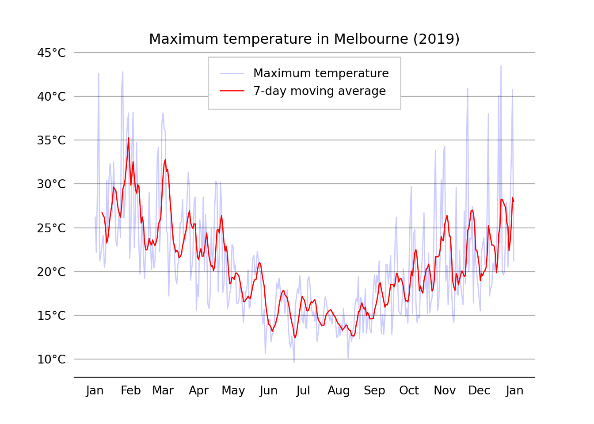
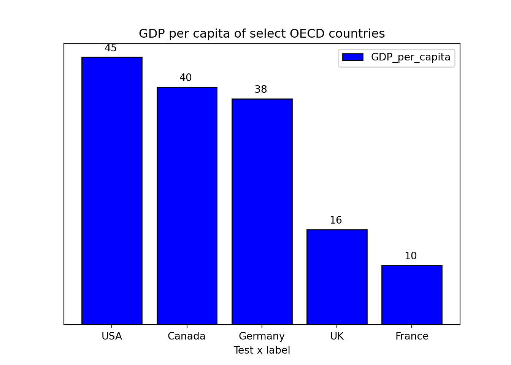
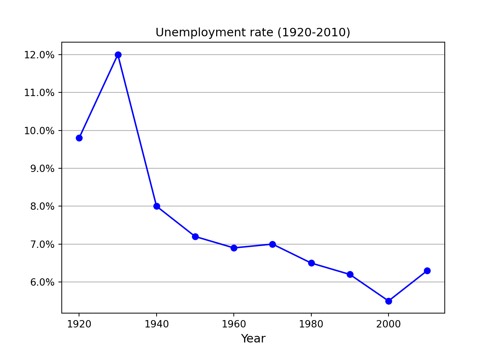
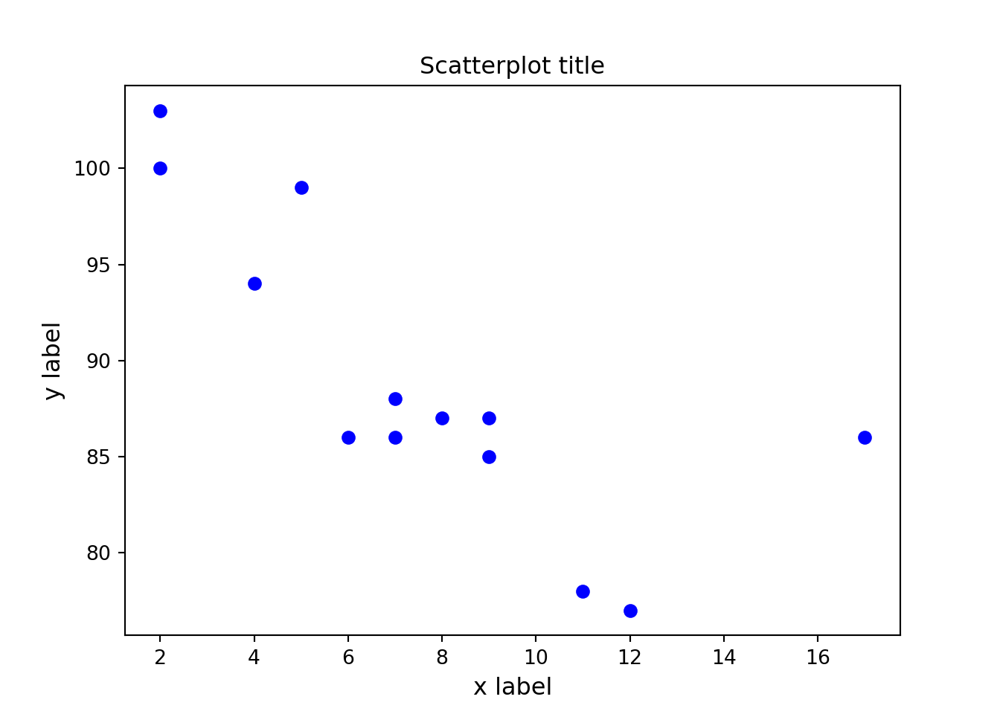
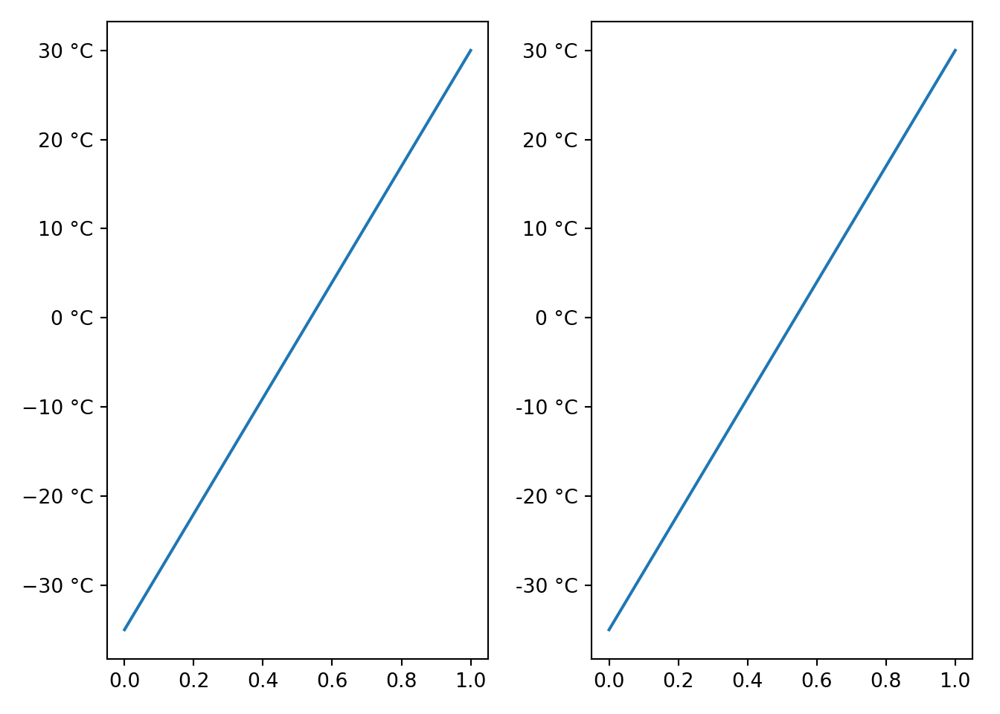
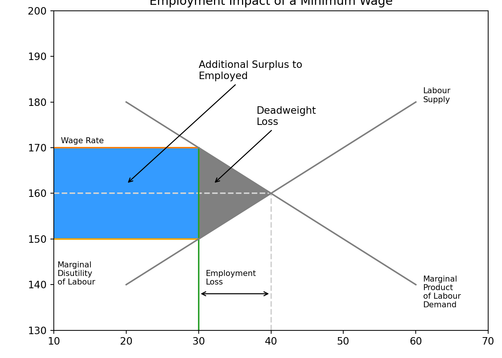
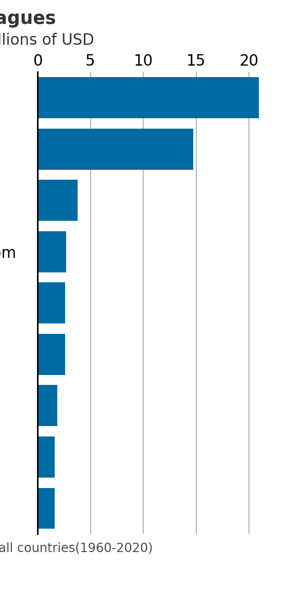
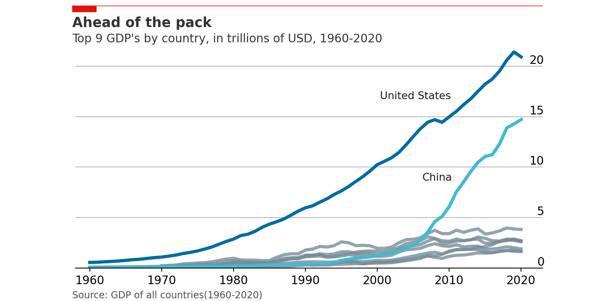

Chapter 2 Making beautiful charts in Python
This chapter contains the code for some of my most used charts and visualization techniques.
2.1 Importing python packages
Let’s load in some libraries that we will use again and again when making charts.
import matplotlib.pyplot as plt
import matplotlib.dates as mdates
import pandas as pd
import numpy as np
import statistics
from scipy.stats import norm
from matplotlib.ticker import EngFormatter, StrMethodFormatter2.2 Reading and cleaning data
Let’s start by importing data from a csv and making it usable. In this example, we’ll use the weather profile from 2019 in Melbourne, Australia.
We’ll also create a new column for a rolling average of the temperature.
#Note non-ascii character in csv will stuff up the import, so we add this term: encoding='unicode_escape'
# Note: The full file location is this:
# /Users/charlescoverdale/Documents/2021/Python_code_projects/learning_journal_v0-1/MEL_weather_2019.csv
# Import csv
df_weather= pd.read_csv("MEL_weather_2019.csv",encoding='unicode_escape')
# Create a single data column and bind to df
df_weather['Date'] = pd.to_datetime(df_weather[['Year', 'Month', 'Day']])
# Drop the original three field date columns
df_weather = df_weather.drop(columns=['Year', 'Month', 'Day'])
# Let's change the name of the solar exposure column
df_weather = df_weather.rename({'Daily global solar exposure (MJ/m*m)':'Solar_exposure',
'Rainfall amount (millimetres)':'Rainfall',
'Maximum temperature (°C)': 'Max_temp'},
axis=1)
#Add a rolling average
df_weather['Rolling_avg'] = df_weather['Max_temp'].rolling(window=7).mean()
df_weather.head()2.3 Line charts
Now that the data is in a reasonable format (e.g. there is a simple to use ‘Date’ column), let’s go ahead and make a line chart.
# Now let's plot maximum temperature on a line chart
plt.plot(df_weather['Date'], df_weather['Max_temp'],
label='Maximum temperature',
color='blue',
alpha=0.2,
linewidth=1.0,
marker='')
plt.plot(df_weather['Date'], df_weather['Rolling_avg'],
label='7-day moving average',
color='red',
linewidth=1.0,
marker='')
plt.title('Maximum temperature in Melbourne (2019)', fontsize=12)
plt.xlabel('', fontsize=10)
plt.gca().xaxis.set_major_formatter(mdates.DateFormatter('%b'))
plt.gca().xaxis.set_major_locator(mdates.MonthLocator(interval=1))
#plt.margins(x=0)
plt.ylabel('', fontsize=10)
plt.gca().yaxis.set_major_formatter(StrMethodFormatter(u"{x:.0f}°C"))
plt.gca().spines['top'].set_visible(False)
plt.gca().spines['bottom'].set_visible(True)
plt.gca().spines['right'].set_visible(False)
plt.gca().spines['left'].set_visible(False)
plt.tick_params(
axis='x', # changes apply to the x-axis
which='both', # both major and minor ticks are affected
bottom=False, # ticks along the bottom edge are off
top=False, # ticks along the top edge are off
labelbottom=True) # labels along the bottom edge are off
plt.tick_params(
axis='y', # changes apply to the y-axis
which='both', # both major and minor ticks are affected
left=False, # ticks along the bottom edge are off
right=False, # ticks along the top edge are off
labelleft=True) # labels along the bottom edge are off
plt.grid(False)
plt.gca().yaxis.grid(True)
plt.legend(fancybox=False, framealpha=1, shadow=False, borderpad=1)
plt.savefig('weather_chart_save.png',dpi=300,bbox_inches='tight')
plt.show()
2.4 Bar charts
# Chart 1: Bar plot
# Get data
country = ['USA', 'Canada', 'Germany', 'UK', 'France']
GDP_per_capita = [45,40,38,16,10]
# Create plot
plt.bar(country, GDP_per_capita, width=0.8, align='center',color='blue', edgecolor = 'black')
# Labels and titlesplt.title('GDP per capita of select OECD countries')
plt.xlabel('Test x label')
plt.ylabel('')
#A dd bar annotations to barchart
# Location for the annotated text
i = 1.0
j = 1.0
# Annotating the bar plot with the values (total death count)
for i in range(len(country)):
plt.annotate(GDP_per_capita[i], (-0.1 + i, GDP_per_capita[i] + j))
# Creating the legend of the bars in the plot
plt.legend(labels = ['GDP_per_capita'])
# Remove y the axis
plt.yticks([])
# plt.savefig('test_bar_plot.png',dpi=300,bbox_inches='tight')
# Show plot
plt.show()
# Saving the plot as a 'png'
#plt.savefig('testbarplot.png')
2.5 Stacked bar charts
labels = ['Group 1', 'Group 2', 'Group 3', 'Group 4', 'Group 5']
men_means = [20, 35, 30, 35, 27]
women_means = [25, 32, 34, 20, 25]
men_std = [2, 3, 4, 1, 2]
women_std = [3, 5, 2, 3, 3]
width = 0.7 # the width of the bars: can also be len(x) sequence
fig, ax = plt.subplots()
ax.bar(labels, men_means, width, yerr=men_std, label='Men')ax.bar(labels, women_means, width, yerr=women_std, bottom=men_means,
label='Women')ax.set_ylabel('Scores')
ax.set_title('Scores by group and gender')
ax.legend()
plt.show()
2.6 Line charts (from raw data)
import matplotlib.ticker as mtick
# Note: you can also get the same result without using a pandas dataframe
#Year = [1920,1930,1940,1950,1960,1970,1980,1990,2000,2010]
#Unemployment_Rate = [9.8,12,8,7.2,6.9,7,6.5,6.2,5.5,6.3]
#Using a pandas dataframe
Data = {'Year': [1920,1930,1940,1950,1960,1970,1980,1990,2000,2010],
'Unemployment_Rate': [9.8,12,8,7.2,6.9,7,6.5,6.2,5.5,6.3]
}
df = pd.DataFrame(Data,columns=['Year','Unemployment_Rate'])
#Add in a % sign to a new variable
#df['Unemployment_Rate_Percent'] = df['Unemployment_Rate'].astype(str) + '%'
plt.plot(df['Year'], df['Unemployment_Rate'], color='blue', marker='o')
plt.title('Unemployment rate (1920-2010)', fontsize=12)
plt.xlabel('Year', fontsize=12)
plt.ylabel('', fontsize=12)
#plt.grid(False)
plt.gca().yaxis.grid(True)
plt.gca().yaxis.set_major_formatter(mtick.PercentFormatter())
plt.show()
2.7 Scatter plot
x =[5, 7, 8, 7, 2, 17, 2, 9,
4, 11, 12, 9, 6]
y =[99, 86, 87, 88, 100, 86,
103, 87, 94, 78, 77, 85, 86]
plt.scatter(x, y, c ="blue")
plt.title('Scatterplot title', fontsize=12)
plt.xlabel('x label', fontsize=12)
plt.ylabel('y label', fontsize=12)
plt.show()
2.8 Histogram
np.random.seed(99)
# Using the format np.random.normal(mu, sigma, 1000)
x = np.random.normal(0,1,size=1000)
# Use density=False for counts, and density=True for probability
plt.hist(x, density=False, bins=100)
# Plot mean lineplt.axvline(x.mean(), color='k', linestyle='dashed', linewidth=1)
plt.ylabel('Probability')
plt.xlabel('Mean');
plt.show()
2.9 Multiple charts in single plot
fig, (ax,ax2) = plt.subplots(ncols=2)
ax.plot([0,1],[-35,30])
ax.yaxis.set_major_formatter(EngFormatter(unit=u"°C"))
ax2.plot([0,1],[-35,30])
ax2.yaxis.set_major_formatter(StrMethodFormatter(u"{x:.0f} °C"))
plt.tight_layout()
plt.show()
2.10 Annotating charts
Example taken from the wonderful blog at Practical Economics.
plt.title('Employment Impact of a Minimum Wage')
# Set limits of chart
plt.xlim(10,70)plt.ylim(130,200)
# Wage supply floorplt.plot([10,30],[150,150],color='orange')
plt.text(10.5,140.0,"Marginal\nDisutility\nof Labour",size=8,color='black')
plt.plot([10,40],[160,160],color='lightgrey',linestyle='--')
plt.plot([40,40],[130,160],color='lightgrey',linestyle='--')
plt.annotate('', xy=(30,138),xytext=(40,138),arrowprops = dict(arrowstyle='<->'))
plt.text(31,140,"Employment\nLoss",size=8, color='k')
plt.axhspan(170,150,xmin=0.0,xmax=20/60,alpha=0.9,color='dodgerblue')
plt.annotate('Additional Surplus to\nEmployed', xy=(20,162),xytext=(30,185),arrowprops = dict(arrowstyle='->'))
# Deadweight loss triangles
trianglex=[30,30,40,30]
triangley=[150,170,160,150]
plt.plot(trianglex,triangley, color='grey')
plt.fill(trianglex,triangley,color='grey')
# Main box
plt.plot([10,30],[170,170],'tab:orange')
plt.plot([30,30],[130,170],'tab:green')
#plt.plot([50,50],[130,170],'tab:red')
plt.text(11,171,"Wage Rate",size=8,color='black')
plt.annotate('Deadweight\nLoss', xy=(32,162),xytext=(38,175),arrowprops = dict(arrowstyle='->'))
#Labour Demand Curve
plt.plot([20,60],[180,140],color='tab:grey')
plt.text(61,135,"Marginal\nProduct\nof Labour\nDemand",size=8,color='black')
#Labour Supply Curve
plt.plot([20,60],[140,180],color='tab:grey')
plt.text(61,180,"Labour\nSupply",size=8,color='k')
plt.show()
2.11 Mimicking The Economist
The visual storytelling team at The Economist is absolutely world class. Their team is quite public about how they use both R and Python in their data science.
Robert Ritz has done an outstanding job at documenting how you can use their style when making charts.
The dataset we’ll use is the GDP records from 1960-2020.
import pandas as pd
import numpy as np
import matplotlib.pyplot as plt
# This makes out plots higher resolution, which makes them easier to see while building
plt.rcParams['figure.dpi'] = 100
gdp = pd.read_csv('data/gdp_1960_2020.csv')
gdp.head()
# The GDP numbers here are very long. To make them easier to read we can divide the GDP number by 1 trillion.gdp['gdp_trillions'] = gdp['gdp'] / 1_000_000_000_000
# Now we can filter for only 2020 and grab the bottom 9. We do this instead of sorting by descending because Matplotlib plots from the bottom to top, so we actually want our data in reverse order.
gdp[gdp['year'] == 2020].sort_values(by='gdp_trillions')[-9:]
# Setup plot size.fig, ax = plt.subplots(figsize=(3,6))
# Create grid
# Zorder tells it which layer to put it on. We are setting this to 1 and our data to 2 so the grid is behind the data.
ax.grid(which="major", axis='x', color='#758D99', alpha=0.6, zorder=1)
# Remove splines. Can be done one at a time or can slice with a list.
ax.spines[['top','right','bottom']].set_visible(False)
# Make left spine slightly thicker
ax.spines['left'].set_linewidth(1.1)
ax.spines['left'].set_linewidth(1.1)
# Setup data
gdp['country'] = gdp['country'].replace('the United States', 'United States')
gdp_bar = gdp[gdp['year'] == 2020].sort_values(by='gdp_trillions')[-9:]
# Plot data
ax.barh(gdp_bar['country'], gdp_bar['gdp_trillions'], color='#006BA2', zorder=2)
# Set custom labels for x-axisax.set_xticks([0, 5, 10, 15, 20])
ax.set_xticklabels([0, 5, 10, 15, 20])
# Reformat x-axis tick labels
ax.xaxis.set_tick_params(labeltop=True, # Put x-axis labels on top
labelbottom=False, # Set no x-axis labels on bottom
bottom=False, # Set no ticks on bottom
labelsize=11, # Set tick label size
pad=-1) # Lower tick labels a bit
# Reformat y-axis tick labels
ax.set_yticklabels(gdp_bar['country'], # Set labels again
ha = 'left') # Set horizontal alignment to left
ax.yaxis.set_tick_params(pad=100, # Pad tick labels so they don't go over y-axis
labelsize=11, # Set label size
bottom=False) # Set no ticks on bottom/left
# Shrink y-lim to make plot a bit tighter
ax.set_ylim(-0.5, 8.5)
# Add in line and tagax.plot([-.35, .87], # Set width of line
[1.02, 1.02], # Set height of line
transform=fig.transFigure, # Set location relative to plot
clip_on=False,
color='#E3120B',
linewidth=.6)
ax.add_patch(plt.Rectangle((-.35,1.02), # Set location of rectangle by lower left corder
0.12, # Width of rectangle
-0.02, # Height of rectangle. Negative so it goes down.
facecolor='#E3120B',
transform=fig.transFigure,
clip_on=False,
linewidth = 0))
# Add in title and subtitle
ax.text(x=-.35, y=.96, s="The big leagues", transform=fig.transFigure, ha='left', fontsize=13, weight='bold', alpha=.8)
ax.text(x=-.35, y=.925, s="2020 GDP, trillions of USD", transform=fig.transFigure, ha='left', fontsize=11, alpha=.8)
# Set source text
ax.text(x=-.35, y=.08, s="""Source: "GDP of all countries(1960-2020)""", transform=fig.transFigure, ha='left', fontsize=9, alpha=.7)
# Export plot as high resolution PNG
plt.savefig('docs/economist_bar.png', # Set path and filename
dpi = 300, # Set dots per inch
bbox_inches="tight", # Remove extra whitespace around plot
facecolor='white') # Set background color to white
plt.show()
We can do a similar process for line charts.
countries = gdp[gdp['year'] == 2020].sort_values(by='gdp_trillions')[-9:]['country'].values
countriesgdp['date'] = pd.to_datetime(gdp['year'], format='%Y')
# Setup plot size.
fig, ax = plt.subplots(figsize=(8,4))
# Create grid
# Zorder tells it which layer to put it on. We are setting this to 1 and our data to 2 so the grid is behind the data.
ax.grid(which="major", axis='y', color='#758D99', alpha=0.6, zorder=1)
# Plot data
# Loop through country names and plot each one.
for country in countries:
ax.plot(gdp[gdp['country'] == country]['date'],
gdp[gdp['country'] == country]['gdp_trillions'],
color='#758D99',
alpha=0.8,
linewidth=3)
# Plot US and China separately
ax.plot(gdp[gdp['country'] == 'United States']['date'],
gdp[gdp['country'] == 'United States']['gdp_trillions'],
color='#006BA2',
linewidth=3)
ax.plot(gdp[gdp['country'] == 'China']['date'],
gdp[gdp['country'] == 'China']['gdp_trillions'],
color='#3EBCD2',
linewidth=3)
# Remove splines. Can be done one at a time or can slice with a list.
ax.spines[['top','right','left']].set_visible(False)
# Shrink y-lim to make plot a bit tigheter
ax.set_ylim(0, 23)
# Set xlim to fit data without going over plot areaax.set_xlim(pd.datetime(1958, 1, 1), pd.datetime(2023, 1, 1))
# Reformat x-axis tick labelsax.xaxis.set_tick_params(labelsize=11) # Set tick label size
# Reformat y-axis tick labels
ax.set_yticklabels(np.arange(0,25,5), # Set labels again
ha = 'right', # Set horizontal alignment to right
verticalalignment='bottom') # Set vertical alignment to make labels on top of gridline
ax.yaxis.set_tick_params(pad=-2, # Pad tick labels so they don't go over y-axis
labeltop=True, # Put x-axis labels on top
labelbottom=False, # Set no x-axis labels on bottom
bottom=False, # Set no ticks on bottom
labelsize=11) # Set tick label size
# Add labels for USA and China
ax.text(x=.63, y=.67, s='United States', transform=fig.transFigure, size=10, alpha=.9)
ax.text(x=.7, y=.4, s='China', transform=fig.transFigure, size=10, alpha=.9)
# Add in line and tag
ax.plot([0.12, .9], # Set width of line
[.98, .98], # Set height of line
transform=fig.transFigure, # Set location relative to plot
clip_on=False,
color='#E3120B',
linewidth=.6)
ax.add_patch(plt.Rectangle((0.12,.98), # Set location of rectangle by lower left corder
0.04, # Width of rectangle
-0.02, # Height of rectangle. Negative so it goes down.
facecolor='#E3120B',
transform=fig.transFigure,
clip_on=False,
linewidth = 0))
# Add in title and subtitle
ax.text(x=0.12, y=.91, s="Ahead of the pack", transform=fig.transFigure, ha='left', fontsize=13, weight='bold', alpha=.8)
ax.text(x=0.12, y=.86, s="Top 9 GDP's by country, in trillions of USD, 1960-2020", transform=fig.transFigure, ha='left', fontsize=11, alpha=.8)
# Set source text
ax.text(x=0.12, y=0.01, s="""Source: GDP of all countries(1960-2020)""", transform=fig.transFigure, ha='left', fontsize=9, alpha=.7)
# Export plot as high resolution PNG
plt.savefig('docs/economist_line.png', # Set path and filename
dpi = 300, # Set dots per inch
bbox_inches="tight", # Remove extra whitespace around plot
facecolor='white') # Set background color to white
plt.show()